사용자 조사 환경
세팅 실행 가이드
빠르게 살펴보기
가이드 목적
본 가이드는 VINYLC 조사 현장 세팅에 필요한 공간·장비·인력·운영 절차를 표준화하여, 담당자의 경험과 숙련도에 관계없이 안정적으로 사용자 조사를 운영하는 것을 목적으로 합니다.
문서 구성
- 조사 유형 확인
- 조사 진행 환경(UT·FGI)
- 장비 세팅
- 조사인력 구성 및 역할
- 역할별 핵심 업무
- 마이크 착용 및 음향 확인
- 실시간 자동 번역(외국인)
- 영상·음향 신호 송출흐름도
- 주요 장비 사양 정보
- 저장매체 정보
- 참여자 컨택 프로세스(사전·당일/조사후)
- 동의서 양식(내국인·외국인 참여자·외국인 통역사)
- 조사 진행간 소통 방식
- IDI 조사실 배치 · 모바일 외 시료 탑뷰 세팅 · UT 외 조사 유형 장비·마이크 구성
- 참여자 대기 장소·동선 · STT Raw data 정제 및 Matrix Table 작성
빠른 찾기
처음부터 순서대로 읽지 않아도, 지금 필요한 내용이 있는 페이지로 바로 찾아갈 수 있도록 상황별 상세 페이지를 안내합니다.
| 구분 | 주요 내용 |
|---|---|
| 조사 유형별 구성 | FGI·UT에 따른 참여 인원과 장비 구성 차이 |
| 조사실 배치 | 조사 유형별 좌석·카메라 설치 위치 |
| 회의실 예약 | 실사 당일 1층·4층 공간 사전 예약 및 안내문 부착 |
| 카메라 세팅 | 카메라 연결부터 화각·탑뷰 촬영 영역 설정 방법 |
| 마이크 세팅 | 송출·녹화용 마이크 연결 및 작동 상태 확인 |
| 사용자 관찰실 세팅 | 4층 화면·음향 수신 및 송출 상태 확인 |
| 세팅 완료 확인 | 조사 시작 전 최종 점검 항목 |
| 필요 인력 및 역할 | 조사 운영에 필요한 인원 구성과 역할 분담 |
| 조사 진행 체크리스트 | 시작부터 종료까지 단계별 운영 확인 사항 |
| 외국인 대상 인터뷰 | Tiro를 활용한 실시간 번역 및 화면 송출 |
| 스크립트 정리 | 촬영 영상에서 음성 추출 및 Tiro를 통한 텍스트 스크립트 변환 방법 |
| 장비·저장매체 정보 | 현행 장비 사양과 촬영용 저장매체 기준 |
| 참여자 컨택 | 조사 전 참여자 안내를 위한 문자·전화 스크립트 |
| 동의서 양식 | 내국인·외국인 참여자 및 외국인 통역사용 개인정보·비밀유지·사례비 동의서 양식 |
| 이슈·개선 아이디어 | 조사 진행간 소통 방식, 조사 환경별 미확정 사항, 운영 개선 아이디어 |
용어 정리
기존 문서마다 다르게 사용하던 공간 명칭을 정리하고, 실사 후 실제 역할을 가장 직관적으로
설명하는 두 가지 명칭으로 확정합니다.
| 기존 표기 | 확정 명칭 | 위치 | 용도 |
|---|---|---|---|
| UT 룸, 사용자 조사룸 | 사용자 조사실 | 1층 | 실사(實査)가 실제로 이루어지는 방. 참여자와 진행자가 대면해 조사(FGI·UT 등)를 진행하고, 카메라·마이크로 그 장면을 촬영·녹음해 4층으로 실시간 송출합니다. |
| (명칭 없음, "X") | 사용자 관찰실 | 4층 | 조사 장면을 실시간으로 지켜보는 방. 1층에서 올라온 영상·음향을 수신해 참관(고객사 포함)·모니터링·노트테이킹을 수행합니다. 참여자는 이 공간에 들어오지 않습니다. |
사전 준비
조사 유형 확인부터 공간 배치, 회의실 예약, 장비 세팅, 4층 사용자 관찰실의 영상·음향 송출 확인까지 실사 전 반드시 완료해야 하는 항목을 순서대로 안내합니다.
조사 유형 확인 — FGI · UT 구성 비교
FGI와 UT는 좌석 배치·마이크 구성·카메라 촬영 대상 및 TV 화면 구성이 서로 다릅니다. 따라서 세팅을 시작하기 전 조사 유형을 먼저 확인합니다.
| 구분 | FGI (포커스 그룹 인터뷰) | UT (사용자 테스트) |
|---|---|---|
| 카메라 구성 | 참여자뷰 2대 + 전경 CCTV 1대 | 참여자뷰 1대 + 시료 탑뷰 1대 + 전경 CCTV 1대 |
| 마이크 구성 | 유선·무선 마이크 총 4대 | 무선 마이크 2대 + 핀마이크 2대 |
| 참여자 구성 | 참여자 6명 | 참여자 1명 + 시료(제품 등) |
| TV 4분할 구성 | 참여자 그룹① · 참여자 그룹② · 전경 · PC | 참여자 · 전경 · 탑뷰(시료) · 모바일* |
*외국인 세션 진행 시 모바일 화면에는 Tiro 실시간 번역 화면을 송출합니다.
조사 진행 환경 (UT)
진행자와 참여자가 1:1로 옆에 앉는 구조에 맞춰, 참여자·공간·시료 조작 과정을 각각 기록할 수 있도록 카메라를 배치합니다.
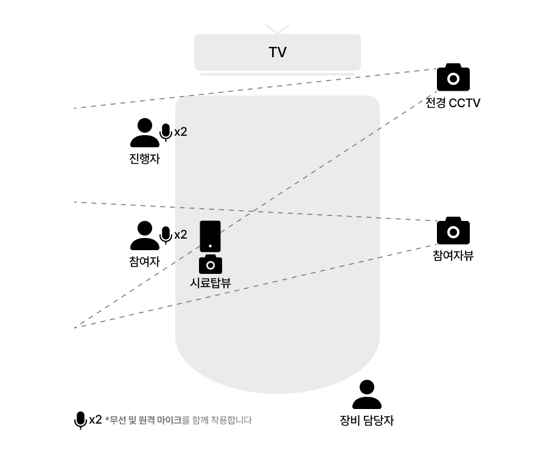
| 카메라 | 설치 위치 | 촬영 방향·대상 |
|---|---|---|
| 참여자뷰 | 우측 중앙 | 참여자 중심 촬영 |
| 전경 CCTV | 우측 상단(TV 옆) | 참여자와 진행자를 포함한 조사 공간 전반 촬영 |
| 시료 탑뷰 | 시료 바로 위 | 시료를 수직 방향으로 촬영 |
좌석·마이크
- 진행자와 참여자는 테이블 좌측에 양 옆으로 착석합니다.
- 진행자와 참여자에게 각각 무선 마이크 1대, 핀마이크 1대를 사용하며 총 4대의 마이크로 구성합니다.
※ 위 UT 구성은 시료(모바일)를 조작하는 조사를 전제로 합니다. 시료 없이 대화 중심으로 진행하는 IDI는 좌석 배치가 달라 별도 배치도가 필요합니다(PAGE 33 참고).
조사 진행 환경 (FGI)
참여자 N명과 진행자·장비 담당자의 좌석을 배치하고, 참여자 그룹별 모습을 촬영할 수 있도록 카메라 3대를 설치합니다.
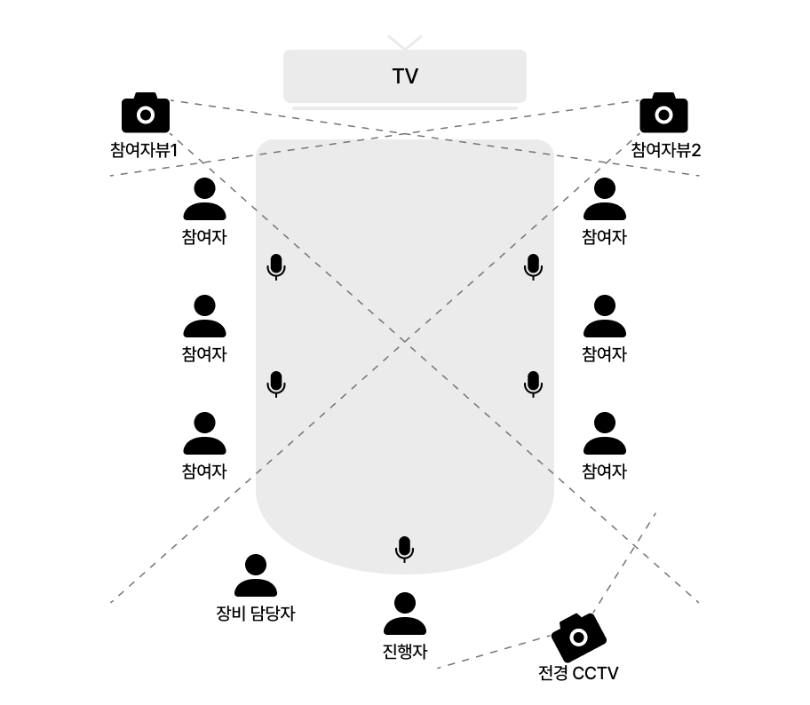
| 카메라 | 설치 위치 | 촬영 방향·대상 |
|---|---|---|
| 참여자뷰1 | TV 좌측(좌상단) | 대각선 맞은편의 우측 참여자 열 촬영 |
| 참여자뷰2 | TV 우측(우상단) | 대각선 맞은편의 좌측 참여자 열 촬영 |
| 전경 CCTV | 진행자 뒤쪽 하단 | 넓은 화각으로 조사 공간 전반 촬영 |
좌석·마이크
- 참여자는 테이블 좌우에 마주 보도록 착석합니다.
- 각 참여자 열 사이에 마이크 2대씩 배치하여 총 5대의 마이크를 사용합니다.
회의실 예약
실사는 1층(사용자 조사실)과 4층(사용자 관찰실) 두 공간에서 동시에 진행되므로, 진행일이 확정되면 두 공간 모두 회의실 예약 시스템으로 미리 확보합니다.
- 1공간 예약
실사 진행일이 확정되면 1층(사용자 조사실)과 4층(사용자 관찰실) 두 공간을 함께 회의실 예약 시스템에 예약합니다.
※ 두 공간에서 동시에 진행되므로, 한 공간만 예약할 경우 다른 직원의 사용 일정과 겹칠 수 있습니다. - 2사내 공지
예약이 확정되면 실사 일정을 사내에 미리 공지합니다.
※ 고객사 방문 사실과 프로젝트 관련 대화가 공용 공간에서 노출되지 않도록, 조사와 무관한 직원들이 해당 공간과 일정을 미리 인지하고 피할 수 있게 하기 위함입니다.사내 공지 문자 예시
[OO 사용자 조사 일정 안내] 아래 일정으로 OO 사용자 조사가 진행될 예정입니다. * 일시: 8월 00일(○) 00:00~00:00 * 장소: 1층 회의실, 4층 회의실 조사 진행 시간 동안 고객사와 참여자가 사무실을 방문할 예정입니다. 프로젝트 및 조사 관련 내용이 공용 공간에서 외부에 노출되지 않도록 대화에 유의해 주시고, 조사와 무관한 직원분들께서는 필요하지 않은 경우 해당 공간의 이용 및 출입을 가급적 피해주시기 바랍니다. 원활한 조사 진행을 위해 협조 부탁드립니다. 감사합니다. 😊 - 3안내문 부착
실사 당일에는 조사실·관찰실 출입문 앞과 엘리베이터 앞에 안내문을 부착해 조사 진행 중임을 다시 한 번 알립니다.
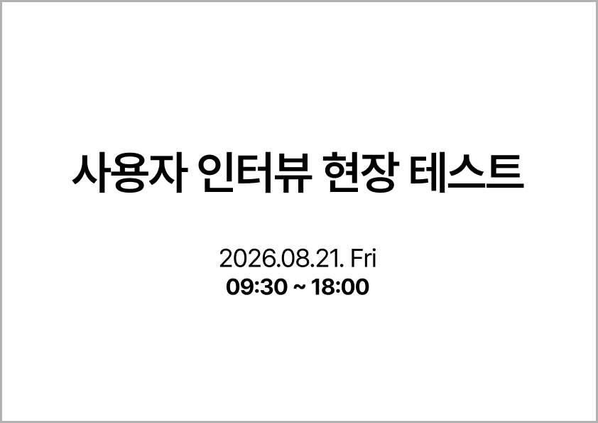
장비 세팅
조사실 - 영상·오디오 연결
카메라를 HDMI 익스펜더에 연결한 뒤, 각 포트와 4층 사용자 관찰실의 송출 화면이 올바르게 연결되었는지 확인합니다.
- 1배치도(PAGE 7~8) 기준으로 카메라와 삼각대를 배치합니다.
- 2각 카메라에 전원을 연결하고 정상적으로 켜졌는지 확인합니다.
- 3각 카메라를 송출용 HDMI 익스펜더 1~4번 포트에 연결합니다.
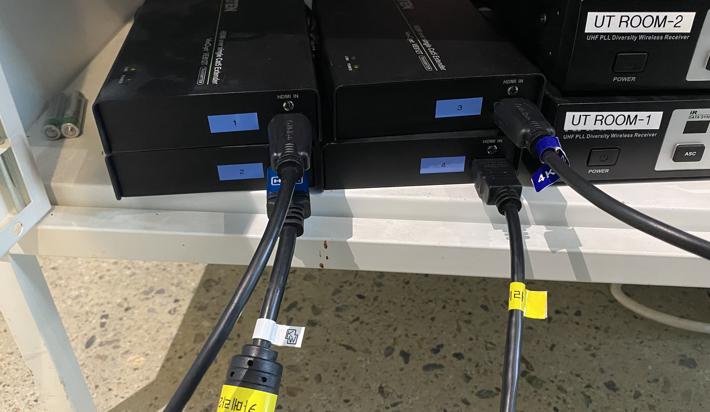
- 4익스펜더 상단의 표시등을 확인합니다.
→ 표시등에 초록불이 모두 점등되면 정상적으로 연결된 상태입니다.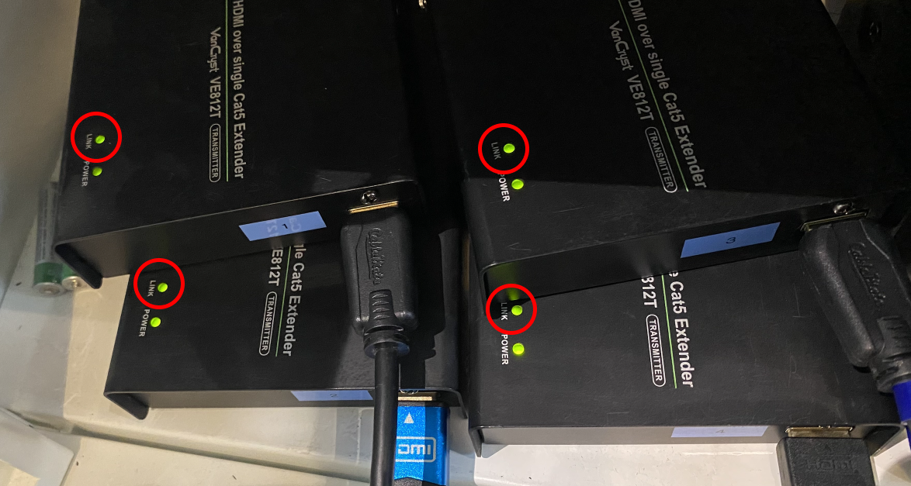
- 5모든 연결이 완료되면 배선을 정리하고, 참여자의 이동 동선을 방해하지 않는지 확인합니다.
- HDMI·전원 케이블 등 노출되는 선은 가능한 한 안보이게 정리합니다.
- 노출되는 내부 장비와 배선은 가림막 등을 통해 가려 조사실 전면이 정돈된 상태로 보이도록 합니다.
포트 매핑 (= 4층 TV 4분할 위치)
※ 4번 포트는 조사 상황에 따라 필요 장비를 유연하게 연결합니다(예: 외국인 조사 시 Tiro 번역 화면).
조사실 - 인물 카메라
4층 사용자 관찰실에 실제로 송출되는 화면을 기준으로 카메라 화각을 최종 조정합니다.
※ 설치 카메라 및 저장매체의 상세 정보는 부록 자료를 참고해 주세요.
참여자뷰
참여자의 모습과 반응이 충분히 담기도록 참여자 중심 화각 설정
- 얼굴·주요 표정이 화면에서 가려지지 않는가
- 신체가 화면 밖으로 잘리지 않는가
- 탑뷰 카메라 거치대 등 주변 장비가 얼굴·표정을 가리지 않는가
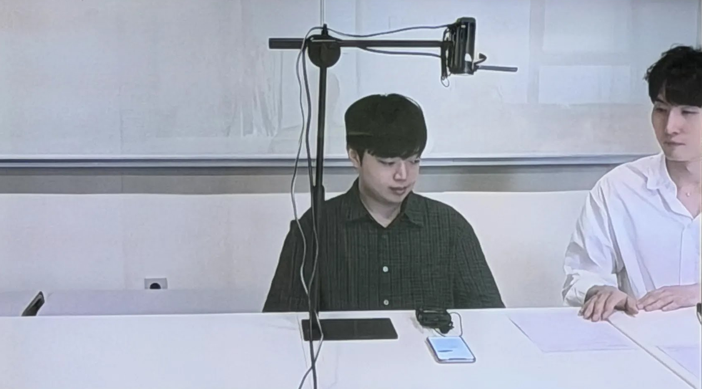
전경 CCTV
참여자·진행자 상호작용을 포함해 조사 진행 전반을 확인할 수 있도록 화각 설정
- 참여자와 진행자의 모습이 모두 화면에 담기는가
- 조사와 관련 없는 공간이 불필요하게 노출되지 않는가
- 최종 화각을 4층 사용자 관찰실 모니터 화면 기준으로 확인했는가
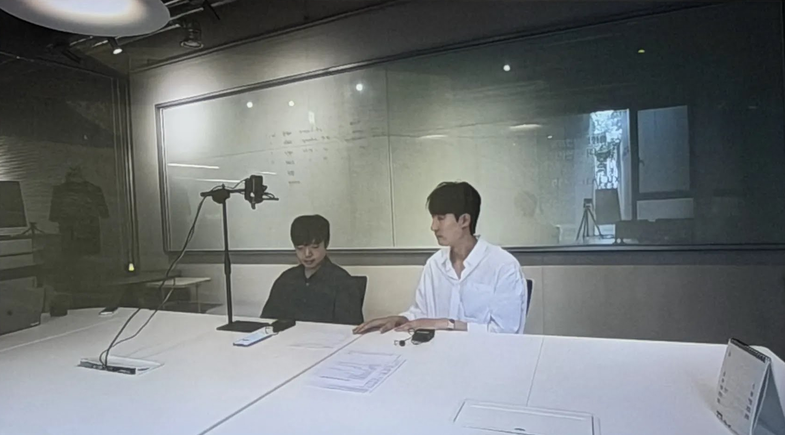
조사실 - 시료 카메라
시료를 조작하는 과정을 안정적으로 촬영할 수 있도록 카메라를 설치하며, 시료를 다루는 범위를 표시해
시료가 카메라 화각 밖으로 벗어나는 것을 방지합니다.
※ 설치 카메라 및 저장매체의 상세 정보는 부록 자료를 참고해 주세요.
카메라 설치
- 최대한 높게 설치촬영 영역을 넓게 확보하고, 참여자의 손이나 팔에 시료가 가려지는 상황을 줄일 수 있습니다.
- 테이블 가장자리 쪽에 설치스탠드가 참여자의 시야와 동선을 방해하지 않도록 하고, 참여자가 스탠드에 부딪혀 화각이 변경되는 것을 방지합니다.
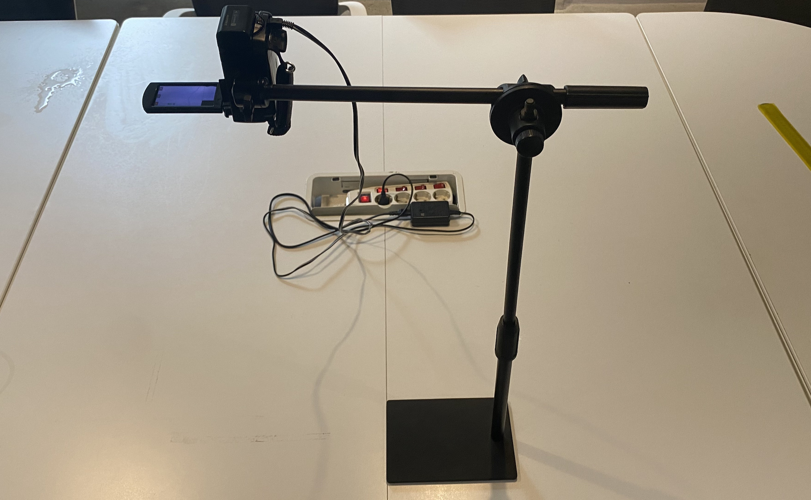
촬영 영역 표시
- 스탠드 설치를 완료하고 위치를 고정합니다.→ 높이나 위치가 바뀌면 촬영 영역도 달라지므로 반드시 먼저 완료합니다.
- 탑뷰 카메라 화면을 켜고 실제 화각을 확인하며, 촬영 영역 가이드를 배치합니다.
- 가이드의 바깥선을 따라 마스킹 테이프를 부착합니다.
- 표시한 촬영 영역이 화각 안에 충분히 들어오는지 확인합니다.
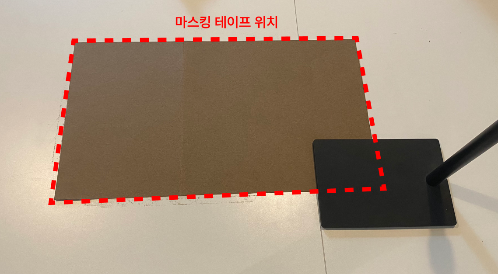
조사실 - 무선 마이크
송출용 무선 마이크와 녹화용 핀마이크는 서로 다른 연결 경로를 사용하므로, 각각의 연결과 작동 상태를 확인합니다.
※ 추가 확인 필요 — 유선 마이크: FGI 등 조사 유형에 따라 유선 마이크를 사용할 수 있으므로, 실제 사용 여부와 연결 경로를 확인한 뒤 본 가이드에 추가합니다. 사용이 확정될 경우 마이크별 설치 위치와 수음 범위, 믹서 연결 채널까지 함께 표준화합니다.
- 1마이크 믹서 전원 및 작동 상태를 확인합니다.
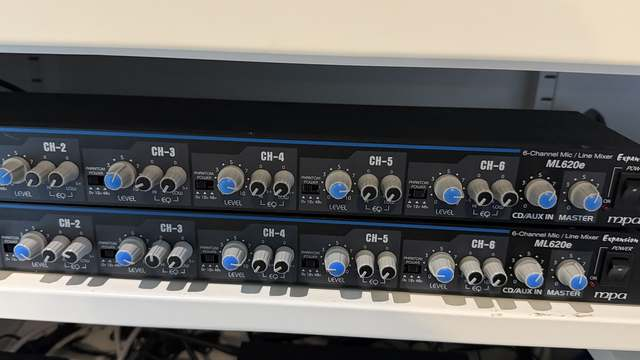
- 2KANALS 무선 마이크 수신기 전원을 켭니다.
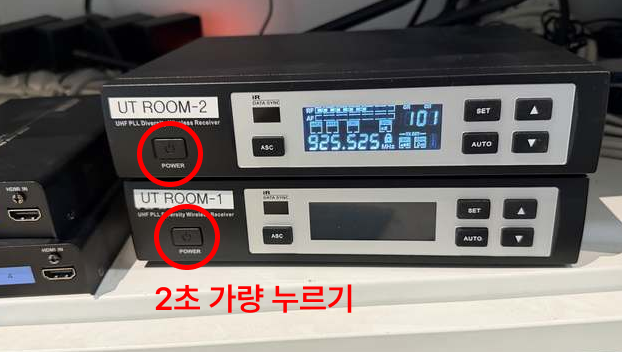
- 3KANALS 무선 마이크 송신기 전원을 켜고 수신기와의 연결 상태를 확인합니다.
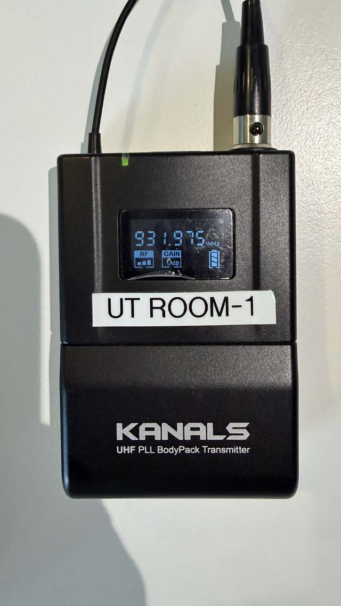
- 4DJI Mic Mini 수신기(RX)를 캠코더의 3.5mm 마이크 단자에 연결합니다.
→ 캠코더에서 외부 마이크가 정상적으로 인식되는지 확인합니다.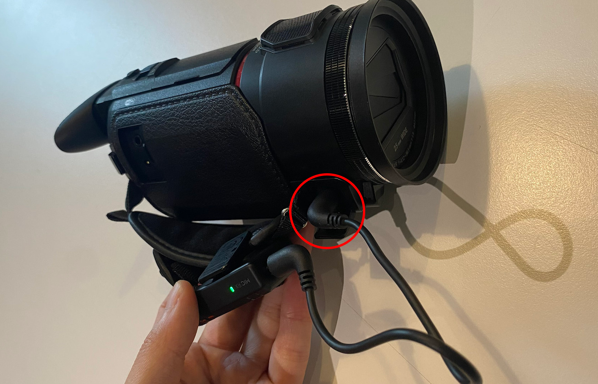
- 5DJI Mic Mini 송신기(TX)의 페어링 상태를 확인합니다.
- 완료 신호: 수신기(RX)의 표시등이 모두 초록색으로 점등되면 정상적으로 페어링된 상태입니다.
- 연결 문제 발생 시: 송신기와 수신기를 DJI 충전 케이스에 넣었다가 다시 꺼낸 후 연결 상태를 확인합니다.
- 다이얼 설정 참고: 수신기 다이얼을 + 방향으로 돌릴수록 주변 소리까지 함께 수음되며, - 방향으로 돌릴수록 마이크 중심으로 수음 범위가 좁아집니다. 일반적인 조사 환경에서는 0(중앙) 위치를 권장합니다.
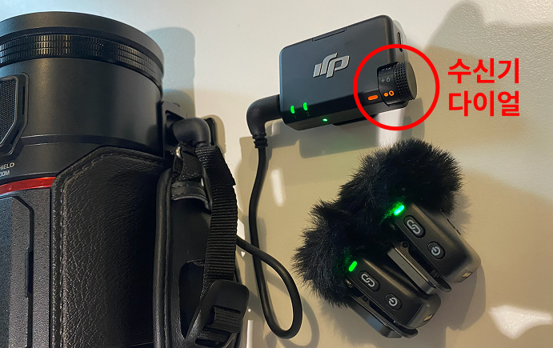
관찰실
1층 장비 연결이 완료된 후, 4층에서 영상과 음향이 정상적으로 수신되는지 최종 확인합니다.
- 1HDMI 1번 포트를 연결합니다
- 기존 1번 포트에 연결된 파란색 케이블을 분리합니다.
- '1번'이라고 표시된 HDMI 케이블을 1번 포트에 연결합니다.
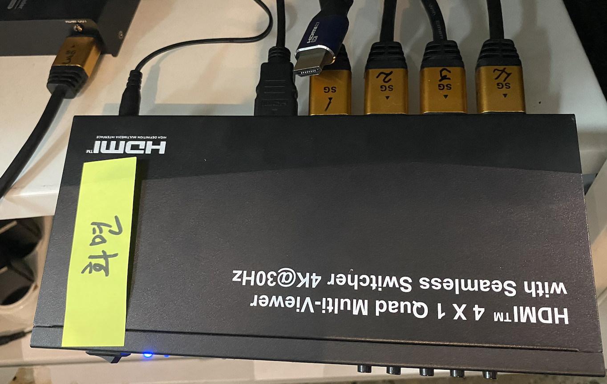
- 2HDMI 수신부의 연결 상태를 확인합니다.
- 상단 표시등에 초록불이 모두 점등되면 정상적으로 연결된 상태입니다.
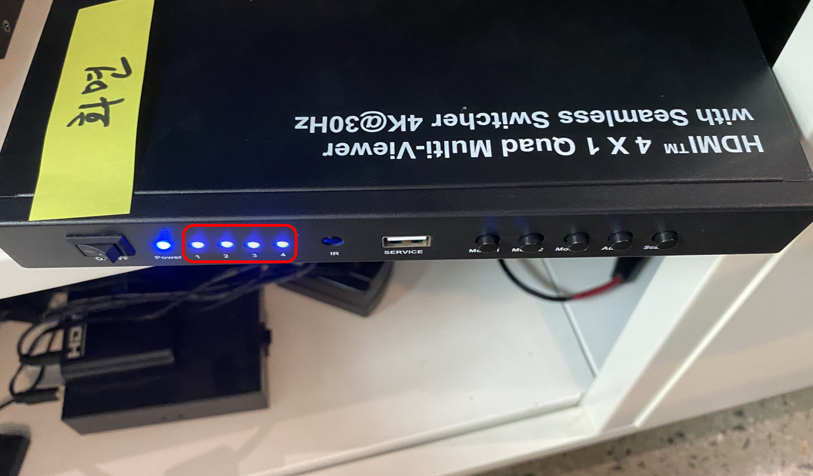
- 3TV 입력을 HDMI 3번으로 설정합니다.
- 각 카메라 화면이 지정된 위치에 정상적으로 송출되는지 확인합니다.
- 필요 시 수신부 우측 버튼을 사용해 화면 분할 모드를 변경합니다.
- 44층 마이크 앰프 전원을 켭니다.
- 스피커를 통해 마이크 음성이 정상적으로 들리는지 확인합니다.
- 관찰 환경에 맞게 볼륨을 조절합니다.
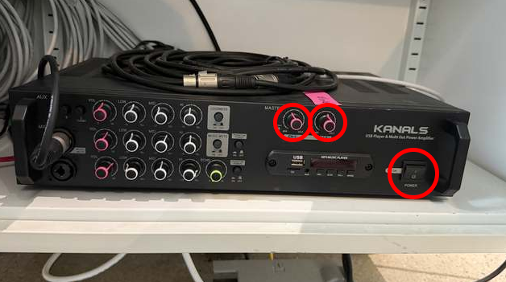
TV 4분할 레이아웃
※ 각 화면에 연결되는 카메라 및 장비는 조사 유형과 진행 방식에 따라 다르게 구성할 수 있습니다. _(e.g. 외국인 조사 시 4번 포트에 Tiro 실시간 번역 화면 연결)_
장비 체크리스트
| 구분 | 확인 대상 | 확인 신호 |
|---|---|---|
| 1층 · 영상 | HDMI 익스펜더 | 표시등이 모두 초록색으로 점등 |
| 1층 · 음향 | KANALYS 무선 마이크 / DJI Mic Mini 수신기 | 연결 및 페어링 상태 정상 |
| 1층 · 탑뷰 | 촬영 영역 | 표시한 촬영 영역 전체가 화면 안에 포함 |
| 1층 · 정돈 | 배선·가림막 | 참여자 동선을 방해하지 않고, 정리된 조사 환경 |
| 4층 · 수신 | HDMI 수신부 | 표시등이 모두 초록색으로 점등 |
| 4층 · 화면 | TV 및 4분할 화면 | 각 화면이 지정된 위치에 정상 송출 |
| 4층 · 음향 | 앰프 및 스피커 | 마이크 음성이 정상적으로 출력 |
| 공통 · 화각 | 실제 송출 화면 | 조사 분석에 필요한 대상과 행동이 화면에 모두 확인됨 |
※ 세팅 완료 기준: 1층 장비가 정상적으로 연결되었고, 4층에서 모든 영상·음향이 실제로 정상 수신되는 것을 확인한 경우에만 세팅을 완료합니다.
조사 진행
조사 현장에서 필요한 인력의 역할과 배치부터, 세션 전·중·후 반드시 확인해야 할 운영 항목, 촬영 영상을 스크립트로 정리하는 방법까지 단계별로 안내합니다.
조사인력 구성 및 역할
기본 운영 인력은 5명이며, 1층 사용자 조사실 2명 / 4층 사용자 관찰실 2명 / 참여자 동선 관리 1명으로 구성합니다.
| 역할 | 위치 | 주요 업무 |
|---|---|---|
| 진행자(모더레이터) | 1층 조사실 | 질문·심층 탐색·시간 관리, 라포 형성, 오프닝·클로징 |
| 보조 진행자 | 4층 관찰실 | 누락 질문 확인, 진행 시간 관리, 고객사 추가 질문 취합·전달 |
| 장비 담당자 | 1층 조사실 | 장비·녹화·송출 관리, 마이크 착용 안내, 장비 이상 대응 |
| 에스코트 담당자 | 층간 이동 동선 | 참여자 입·퇴실 안내 및 인솔, 사례비·서류 처리, 동선 관리 4명일 경우 노트테이킹 담당자 역할 함께 수행 |
| 노트테이킹 담당자 | 4층 관찰실 | 발언·행동 기록, 영상·음향 상태 확인 및 이상 공유 4명일 경우 에스코트 담당자 역할 함께 수행 |
5명의 구성이 어려운 경우
VC-4(에스코트 담당자)와 VC-5(노트테이킹 담당자)를 1인이 겸임합니다.
- 참여자 인솔을 마친 후 → 4층에서 노트테이킹 수행
- 세션 종료 시 → 1층으로 이동해 참여자 퇴실 안내
- 인솔로 4층 자리를 비우는 동안 → VC-3이 송출 상태 확인을 대신 담당
- 고객사 참관 시에는 인솔 및 동선 관리 부담이 커지므로 가급적 5명 운영 권장
동선 관리 원칙
고객사 참관자가 있는 경우, 참여자와 고객사의 동선이 겹치지 않도록 사전에 이동 경로를 분리합니다. 또한 고객사 방문 사실과 프로젝트 관련 대화가 공용 공간에서 노출되지 않도록 조사 전 사내에 미리 안내합니다.
역할별 핵심 업무
세션의 시작부터 종료까지 확인해야 할 항목을 단계별로 나누고, 각 항목의 담당자를 명확하게 지정합니다.
| 구간 | 점검 항목 | 담당 |
|---|---|---|
| 시작 전 | 장비 배터리 잔량 및 저장 공간 확인 | 장비담당자 |
| 참여자 마이크 착용 보조 및 전원 상태 확인 | 장비담당자 | |
| 영상·음향이 4층에 정상 송출되는지 확인 | 장비담당자 · 보조진행자 | |
| 실제 송출 화면 기준으로 카메라 화각 최종 확인 | 장비담당자 | |
| 진행 시작 | 녹화 시작 후 녹화 시작 시점 구두로 공유 (e.g. 녹화 버튼 ON → "○○카메라 녹화 시작하겠습니다") | 장비담당자 |
| 녹화가 정상적으로 시작되었는지 확인(오류 시 즉시 공유) | 보조진행자 | |
| 진행 중 | 카메라·녹화 음향 장비 이상 여부 확인 | 장비담당자 |
| 영상·음향 송출 상태 확인 | 노트테이킹 담당자 | |
| 조사 흐름을 확인하며 누락된 질문 점검 | 보조진행자 | |
| 종료 | 녹화 종료 및 저장 상태 확인 | 장비담당자 |
마이크 착용 및 음향 확인
마이크의 위치와 방향이 조금만 달라져도 음량과 수음 품질이 크게 달라질 수 있으므로, 착용 후 반드시
실제 송출 음향까지 확인합니다.
※ 착용 원칙: 송출용 무선 마이크(KANALS)는 수음 방향과 위치에 따라 4층으로 전달되는 음향 품질이 크게 달라질 수 있습니다. 따라서 참여자가 직접 착용하기보다 '장비 담당자'가 위치와 방향을 확인하며 착용을 안내합니다.
착용 시 체크 포인트
- 마이크 헤드가 입 방향을 향하는가 (아래·옆·바깥 향하지 않는가)
- 옷깃·머플러·머리카락·명찰 등에 수음부가 가려지지 않는가
- 착용 높이·거리가 참여자마다 크게 다르지 않은가 (세션 간 음량 편차 방지)
- 4층 스피커를 통해 관찰실에서 음성이 실제로 명확하게 들리는가
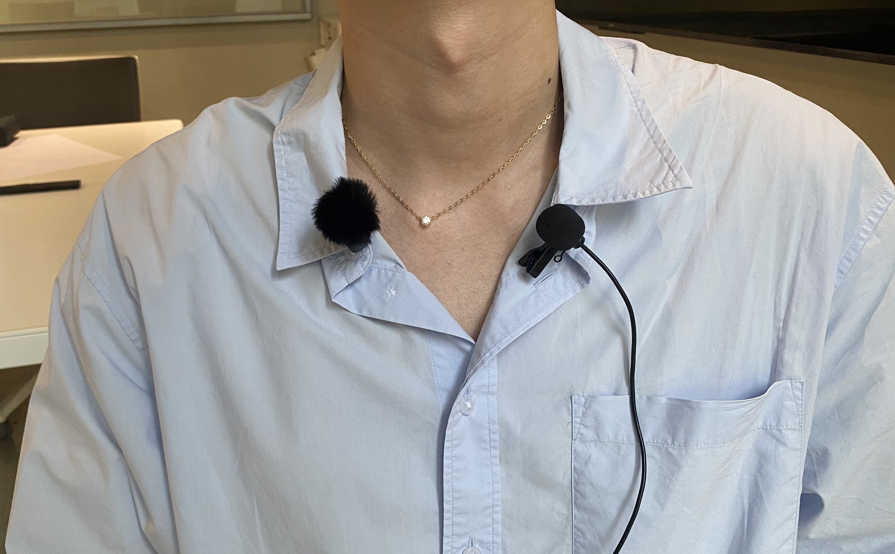
실시간 자동 번역 (외국인)
외국인 대상 인터뷰는 외국어 진행이 가능한 진행자를 기본으로 하며, Tiro를 활용해 4층 관찰실에
실시간 번역 내용을 공유합니다.
※ Tiro 번역 시작 및 화면 송출은 '장비 담당자'가 담당합니다. (녹화 시작 후 Tiro 실시간 번역을 시작)
- 1기본 설정 (모든 외국어 세션 공통)
- 1.Tiro 데스크톱 앱을 실행하고 VinylC 리서치 계정으로 로그인합니다.
- 2.설정 > 기본설정에서 아래 항목을 활성화합니다.
- 대화 자동 감지
- 실시간 기록 표시
- 음성 파일 로컬 저장
- 3.Tiro가 실행된 맥북을 HDMI 4번 포트에 연결합니다.
- 4.4층 관찰실에서 Tiro 번역 화면이 정상적으로 송출되는지 확인합니다.
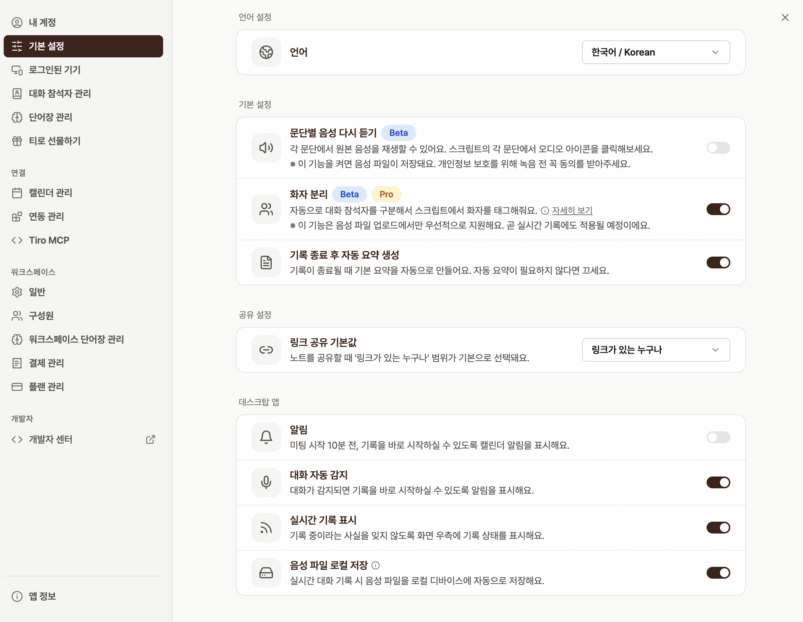
- 2실시간 번역 큰 글씨 모드
- 1.대화 언어를 '다국어'로, 기록 언어를 '한국어'로 설정합니다.
- 2.번역 기능이 활성화되어 있는지 확인합니다.
- 3.참관자가 번역 내용을 쉽게 확인할 수 있도록 컨퍼런스 모드를 활성화합니다.
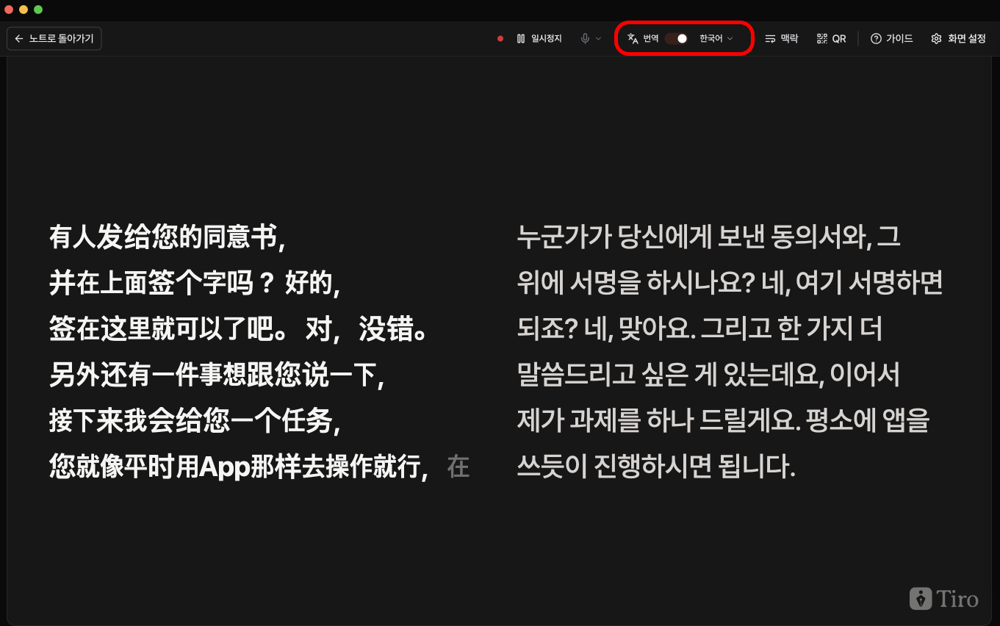
- 3오류 발생 시
실시간 번역이 정상적으로 표시되지 않을 경우:
'일시정지' → '재생' 버튼을 순서대로 눌러 번역을 다시 시작합니다.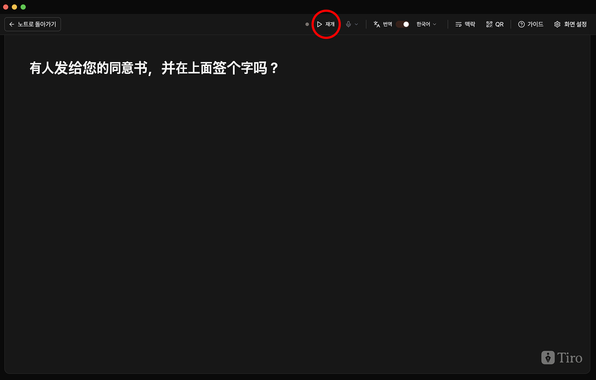
스크립트 정리 방법
촬영이 끝난 영상에서 음성을 추출하고, 이를 텍스트 스크립트로 변환하는 절차를 안내합니다.
- 1영상 파일 추출
- 1.카메라의 SD카드를 PC에 연결해 영상 파일을 확인합니다.
- 시료 카메라 영상은 AVCHD 규격으로 저장되어 있어, 일반 폴더처럼 바로 영상 파일이 보이지 않을 수 있습니다.
- 보이지 않을 경우, SD카드에서 AVCHD 폴더 펼쳐보기를 선택 > BDMV 폴더 펼쳐보기를 선택 > STREAM 폴더 안에서 실제 영상 파일을 확인하고 복사합니다.
- 1.카메라의 SD카드를 PC에 연결해 영상 파일을 확인합니다.
- 2음성 파일 추출 (Mac 기준)
- 1.추출한 영상 파일을 QuickTime Player로 엽니다.Mac이 아닌 Windows의 경우, 반디컷(Bandicut)을 이용하면 음성 파일 추출이 가능합니다.
- 2.상단 메뉴에서 파일 > 다음으로 내보내기 > 오디오 전용을 선택합니다.
- 3.영상에서 음성만 분리된 파일이 저장됩니다.
- 1.추출한 영상 파일을 QuickTime Player로 엽니다.
- 3스크립트(STT) 변환
- 1.추출한 음성 파일을 Tiro에 업로드해 텍스트 스크립트로 변환합니다.→ 핀마이크 없는 조건에서 자체 비교한 결과 Tiro(오류율 5.96%)가 클로바노트(오류율 8.98%)보다 인식 정확도가 더 높게 나와, 스크립트 변환 도구로 Tiro를 사용합니다. [STT_정확도평가 참조]
- 2.변환된 스크립트를 검토하고 필요한 부분을 보정합니다.
- 1.추출한 음성 파일을 Tiro에 업로드해 텍스트 스크립트로 변환합니다.
부록
본문에서 다루지 않은 장비 정보와 운영 참고 사항을 정리했습니다. 조사 진행에 반드시 필요한 내용은 아니지만,
장비를 확인하거나 운영 방식을 검토할 때 참고할 수 있습니다.
영상·음향 신호 송출흐름도
전체구조
- 카메라 3대 (참여자뷰·시료탑뷰·전경CCTV)
- 마이크 7대 (유선5+무선2)
- 영상: HDMI over Cat5 (익스텐더)
- 음향: XLR 아날로그 직결
- 멀티뷰 TV (3~4분할)
- 앰프 + 별도 스피커
영상 트랙
캠코더 3대 → (HDMI) → ATEN 익스텐더(VE812T, 1층 송신) → (Cat5) → ATEN 수신기(4층) → (HDMI) → 4x1 멀티뷰어 → (HDMI③) → TV
음향 트랙
유선5+무선2 마이크 → (XLR/RF) → ML620e 믹서(하단 유닛) → (XLR 장거리) → KANALS 앰프(4층, MASTER CH1/2) → (Speaker) → 스피커
※ 여유 채널 있음 — ML620e 믹서의 일부 채널은 현재 사용하지 않고 있어, 필요 시 추가 마이크 연결을 검토할 수 있습니다.
주요 장비 사양 정보
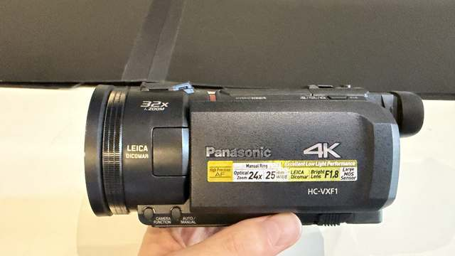
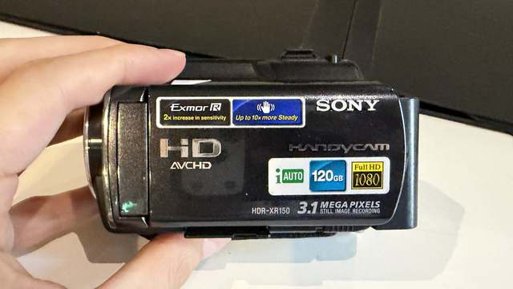
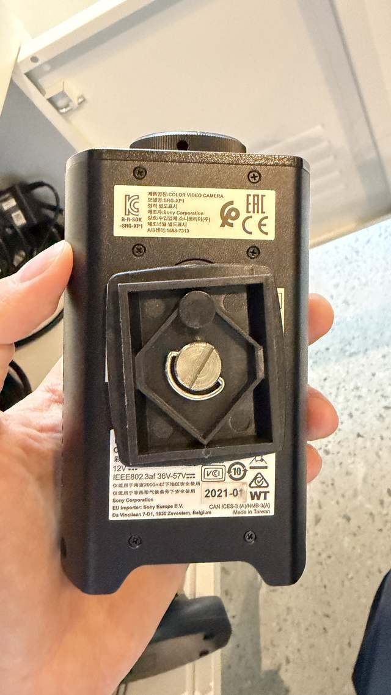

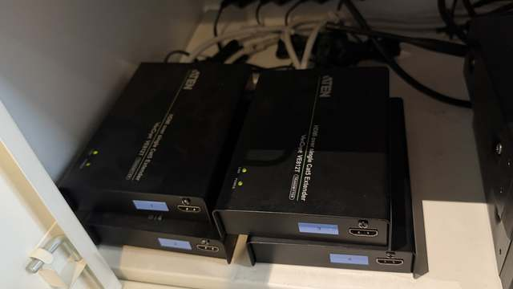
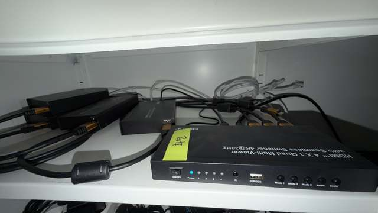
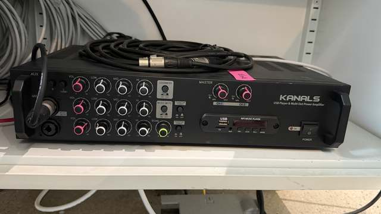

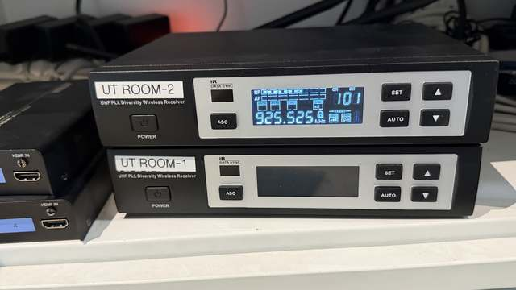
저장매체 정보
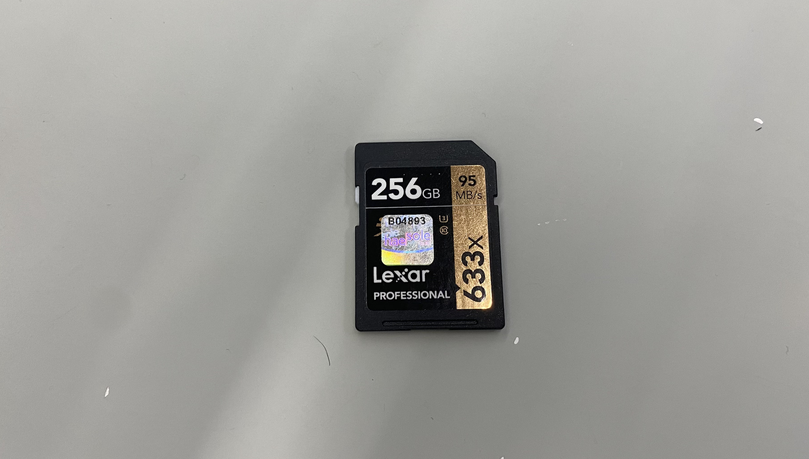
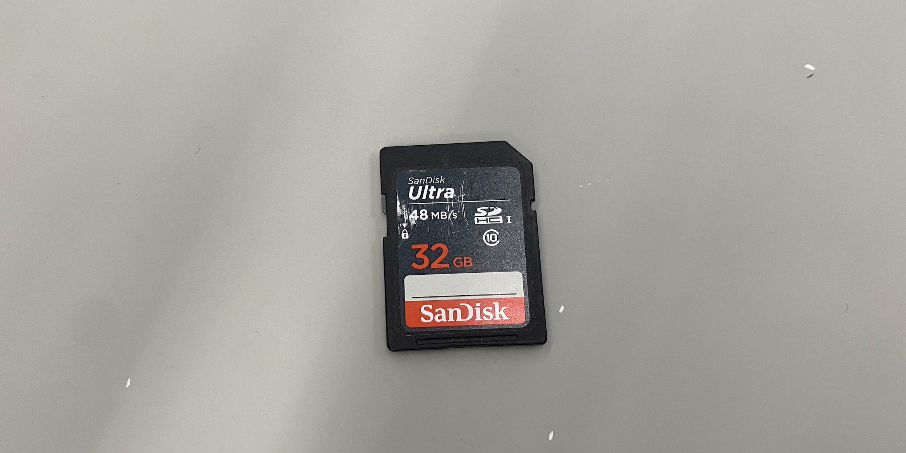
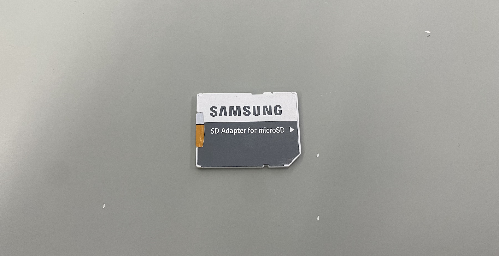
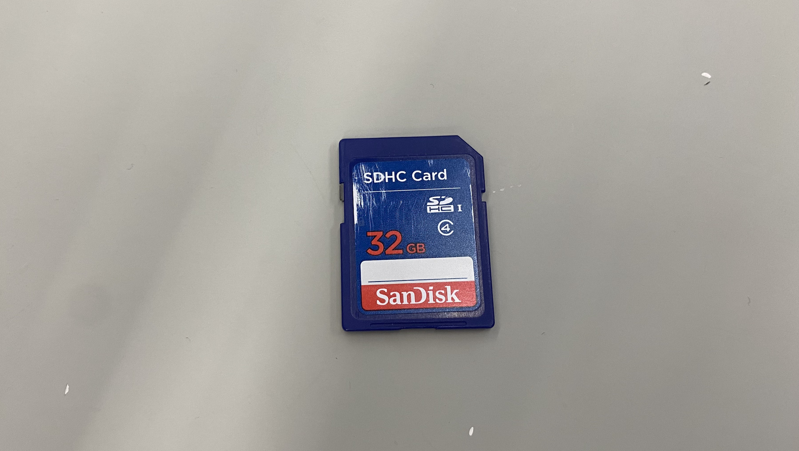
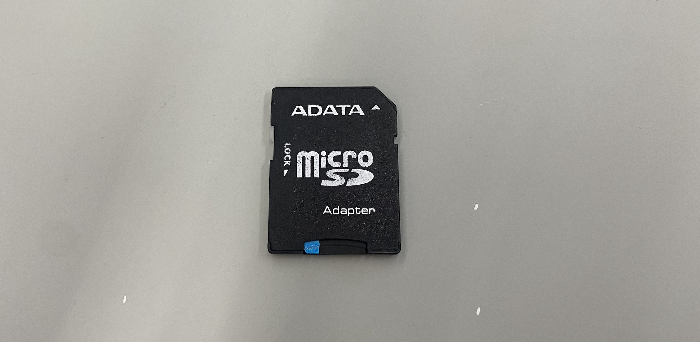
참여자 컨택 - 사전 프로세스
1차 컨택을 위한 스크립트 작성부터 전화 컨택, 참여 확정 문자 발송까지 조사 전 진행하는 컨택 절차입니다.
- 1컨택가이드(전화 스크립트) 작성
반드시 확인해야 하는 스크리닝 질문을 확인하여 스크립트에 반영합니다.
컨택가이드 예시
안녕하세요, 000님 되시나요? [조사명] 참여 신청해주셔서 참여 안내 때문에 전화드렸습니다. 저희는 UX 전문 에이전시 [바이널씨]입니다. Q1. 0월 00일 00시 부터 00시까지 여의도 더현대 인근에서 진행하는 [조사명]에 참여 가능하실까요? 1)예 (→Q2로 이동) 2)아니오 → 그날 일정이 아예 안되는 걸까요? 아니면 날짜를 바꾸면 가능할까요? (일정 확인 후) 다른 분들의 일정도 확인이 필요해서요. 다시 알아보고 연락 드리겠습니다. (통화 종료) Q2. 참여 신청하실 때 적어 주셨지만 한 번 더 여쭤보려고 해요. 혹시 마케팅/시장조사/언론/UX/금융 분야에 종사하고 계실까요? 1) 예 → 답변 감사합니다. 저희가 직업 관련해서 한번 확인이 필요해서, 확인 후 다시 연락 드리겠습니다. 2) 아니오 (→Q3으로 이동) Q3. 답변 감사합니다. 참석 당일 10분 전에 도착해 주셔야 하고, 신분증이 확인되어야 건물 출입이 가능하니 신분증 꼭 필참해 주세요. 지금 안내 드린 사항은 한 번 더 문자로 보내 드릴 예정입니다. 참여해 주셔서 감사합니다. - 2전화 컨택
선정된 참여자에게 1차 컨택은 전화를 기본으로 합니다.
*문자 연락도 무방하나, 회신이 오래 걸리거나 응답이 오지 않는 경우가 자주 발생
* 전화 연결이 되지 않을 경우 문자로 통화 가능한 일정을 확인 후 다시 전화 연결- 일정/조건 등의 이유로 참여가 확정되지 않은 경우 예비 참여자에게 컨택
- 3확정 문자 전송
참여 여부가 확정된 참여자에게 정확한 조사 일시/장소/사례비등을 문자로 상세히 안내합니다.
- 참여 조건에 문제가 없고, 참여 여부가 확정된 참여자에게 전송
(참여자들이 기다리는 경우가 많기 때문에 가급적 확정된 즉시 전송) - 아이폰으로 단체 메시지 전송 시 단톡방으로 생성됨 (신분증, 통장 사본 요청 등 개인정보 관련 내용일 경우 개별 메시지로 발송)
확정 문자 예시
안녕하세요, [조사 대상자 이름]님! 이번 대면 좌담회 관련 공지사항을 다시 한 번 안내드리며, 참여 확정 문자를 보내드립니다. [인터뷰 세부 사항] 일정: M/D(요일) 오후/오전 N시 장소: 바이널씨(서울 강남구 논현로 142길 32) 예상 소요 시간: 약 N분 준비물: 신분증 지참 (필수) 사례금: N만원 참고 사항: 인터뷰 시작 10분 전까지 바이널씨 P층 주차장 앞으로 도착해 주셔야 합니다. 도착하신 후 이 번호로 연락 주시기 바랍니다. 신분증을 지참하지 않으면 건물 입장이 불가하오니, 반드시 신분증을 지참해 주시기 바랍니다. 추가로 궁금한 점이 있으시면 언제든지 문의 주세요. 감사합니다 😊 - 참여 조건에 문제가 없고, 참여 여부가 확정된 참여자에게 전송
참여자 컨택 - 당일/조사후 프로세스
조사 당일 리마인딩부터 사례비 지급을 위한 서류 수령, 개인정보 전달·삭제까지 조사 후 마무리하는 절차입니다.
- 4리마인딩 문자 전송 (조사 당일)
참여자가 조사 일정을 잊지 않도록 리마인딩하고, 참여 여부를 다시 한번 묻는 목적의 문자를 전송합니다.
- 조사가 오전에 이루어질 경우 전날, 오후에 이루어질 경우 당일 오전에 전송
- 노쇼/지각이 발생할 경우 즉시 공유
리마인딩 문자 예시
안녕하세요, [조사 대상자 이름]님! 오늘 진행되는 [조사명] 좌담회에 대한 리마인딩 문자 드립니다. 참여 가능하신 경우 간단한 회신 부탁드립니다. [인터뷰 세부 사항] 일정: M/D(요일) 오후/오전 N시 장소: 바이널씨(서울 강남구 논현로 142길 32) 예상 소요 시간: 약 90분 준비물: 신분증 지참 (필수) 사례금: 7만원 참고 사항: 인터뷰 시작 10분 전까지 바이널씨 P층 주차장 앞으로 도착해 주셔야 합니다. 도착하신 후 이 번호로 연락 주시기 바랍니다. 신분증을 지참하지 않으면 건물 입장이 불가하오니, 반드시 신분증을 지참해 주시기 바랍니다. 추가로 궁금한 점이 있으시면 언제든지 문의 주세요. 감사합니다 😊 - 5사례비 안내문자 발송 (조사 종료 당일 혹은 익일 전송)
사례비 입금을 위해서는 신분증 사본&통장 사본을 참여자에게 전송받아야 하기 때문에 이에 대한 안내를 문자로 전송합니다.
사례비 안내 문자 예시
안녕하세요, [조사 대상자 이름]님! 오늘 진행된 [조사명] 좌담회에 참여해 주셔서 진심으로 감사드립니다. 사례금 지급을 위해 신분증 사본과 통장 사본을 [M/D(요일)] 까지 이 번호로 문자로 제출해 주셔야 합니다. 제출된 서류는 확인 후 바로 삭제 처리됩니다. 추가로 궁금한 사항이 있으시면 언제든지 연락 주세요. 조사에 적극 참여해 주셔서 다시 한 번 감사드립니다. 오늘 하루 좋은 하루 되세요! 😊 - 6신분증, 통장 사본&동의서 전달
문자로 전달받은 신분증/통장 사본과 조사 진행 전 서명 받은 동의서를 PM에게 전달합니다.
- 사례비 지급 이후 신분증/통장 사본 이미지 삭제 (갤러리, 문자, 구글드라이브 등)
[개인정보 수집·이용 동의서, 비밀유지 서약서, 사례비 지급을 위한 개인정보 활용 동의서] → PM에게 전달 [신분증/통장 사본] → 신분증/통장 사본은 구글 드라이브에 '신분증/통장사본'폴더를 만들어 링크로 PM에게 전달 (이미지 정리 시 '참여자 이름_신분증', '참여자 이름_통장사본' 규칙으로 정리하면 보기 편함)
동의서 양식 - 내국인
참여자는 조사 시작 전 개인정보 수집·이용 동의서, 비밀유지 서약서 및 사례비 지급 관련 동의서를 작성합니다. 조사 진행 전 참여자의 동의서 작성 여부와 서명 완료 여부를 반드시 확인합니다.
- 1개인정보 수집·이용 동의서
조사 진행에 필요한 개인정보의 수집·이용 목적과 범위를 사전에 안내하고, 이에 대한 참여자의 동의를 받기 위한 서류입니다.
개인정보 수집·이용 동의서 양식
개인정보 수집·이용 동의서 「개인정보보호법」 등 관련 법규에 의거하여 (주)바이널씨는 귀하의 개인정보 수집 및 이용에 대해 개인정보 수집·이용 동의서를 받고 있습니다. 개인정보 제공자가 동의한 내용 외의 다른 목적으로 활용하지 않으며, 제공된 개인정보의 이용을 거부하고자 할 때에는 개인정보 관리책임자를 통해 열람, 정정 혹은 삭제를 요구할 수 있습니다. ※ 제공된 개인정보는 (주)바이널씨의 아래 항목에 제한된 범위에서만 활용됩니다. 정보활용목적 1. 참여자의 개인정보와 녹음·영상 자료는 리서치 분석 및 보고서 작성 등 프로젝트 관련 산출물 작성을 위한 용도로 활용됩니다. 2. 보존기간은 동의일로부터 수집이용 목적달성 시까지 또는 참여자의 동의 철회 시까지 입니다. 3. 그 외의 용도로 활용할 경우는 반드시 참여자의 허락과 동의를 받겠습니다. [제3자 정보제공 동의] – 촬영된 녹음·영상 데이터는 리서치를 의뢰한 수탁자에게 제공됩니다. – 수탁자 : [고객사명] --- 「개인정보보호법」 제15조 법규에 의거하여 상기 본인은 위와 같이 개인정보 수집 및 활용에 동의함. 2027년 월 일 성명 : ________________ (날인/사인) 사용자조사 제출서류 · (주)바이널씨 - 2비밀유지서약서
조사 과정에서 접하게 되는 고객사 및 프로젝트 관련 정보를 외부에 공개하거나 조사 목적 외로 사용하지 않도록 참여자의 비밀유지 의무를 확인하기 위한 서류입니다.
비밀유지서약서 양식
비밀유지서약서 본인은 2027년 ○○월 ○○일에 (주)바이널씨가 주관하는 [조사명] 프로젝트(이하 '프로젝트'라 함)와 관련된 사용자 조사에 참여함에 있어, 모든 정보가 영업 비밀 및 중요한 영업 자산임을 인지하고 충분히 설명을 듣고 그 내용을 이해하였기에, 다음 사항을 준수할 것을 서약합니다. 1. 본 서약서에서 "비밀정보"라 함은 귀하가 프로젝트 참여 과정에서 인지하거나 접하는 모든 정보, 자료 데이터, 기술적 정보, 상업적 정보 및 기타 모든 형태의 정보를 포함하며, 이는 구두, 서면, 전자적 형태를 불문하고 포함됩니다. 2. 본인은 프로젝트와 관련된 어떠한 정보도 회사의 사전 서면 동의 없이는 어떠한 방법으로도 경쟁업체나 제3자에게 제공하거나 누설하지 않으며, 부정한 목적으로도 공개하거나 사용하지 않을 것을 서약합니다. 3. 본인은 프로젝트에 관한 모든 기밀 정보를 보호하기 위해 최선을 다할 것이며, 인터뷰 종료 후에도 이러한 의무는 계속 유지됨을 이해하고 동의합니다. --- 본인은 위의 내용을 충분히 이해하고 동의하며, 서약 내용을 위반할 경우 관련 법규에 의한 민·형사상 책임을 감수할 것을 서약합니다. 2027년 월 일 성명 : ________________ (날인/사인) 사용자조사 제출서류 · (주)바이널씨 - 3사례비 지급을 위한 개인정보 활용 동의서
조사 참여에 대한 사례비를 지급하는 데 필요한 정보를 수집하고, 지급 절차에 대한 참여자의 동의를 받기 위한 서류입니다.
사례비 지급을 위한 개인정보 활용 동의서 양식
사례비 지급을 위한 개인정보 활용 동의서 개인정보 내용 : 신분증 사본, 참여자 명의 통장 사본 정보 활용 : 상기 참여자의 개인정보는 사례비 지급 및 영수를 위한 목적으로만 사용됩니다. 지급 내용 : 조사 참여로 인한 사례비 지급 – 사례비 : 00,000원 – 수급된 참여자 명의의 통장으로 조사 완료 후 2주 이내 입금 --- 참가자 본인은 상기 개인정보 활용과 관련된 사항을 확인하였으며, 정보 활용 및 지급 내용에 동의함을 날인하여 확인합니다. 2027년 월 일 성명 : ________________ (날인/사인) 사용자조사 제출서류 · (주)바이널씨
동의서 양식 - 외국인(참여자)
외국인 참여자는 내국인 참여자와 동의서 양식 및 작성 항목이 다르므로, 외국인 참여자용 별도 양식을 사용합니다. 조사 시작 전에는 통역사가 동석해 동의서 내용을 참여자의 모국어로 통역하고, 통역 확인 서명을 남깁니다.
- 1개인정보 수집·이용 동의서
내국인 양식과 동일한 수집·이용 항목에 통역사 동석 안내와 통역 확인 서명란을 추가한 외국인 참여자용 서류입니다.
개인정보 수집·이용 동의서 양식
개인정보 수집·이용 동의서 「개인정보보호법」 등 관련 법규에 의거하여 (주)바이널씨는 귀하의 개인정보 수집 및 이용에 대해 개인정보 수집·이용 동의서를 받고 있습니다. 개인정보 제공자가 동의한 내용 외의 다른 목적으로 활용하지 않으며, 제공된 개인정보의 이용을 거부하고자 할 때에는 개인정보 관리책임자를 통해 열람, 정정 혹은 삭제를 요구할 수 있습니다. ※ 제공된 개인정보는 (주)바이널씨의 아래 항목에 제한된 범위에서만 활용됩니다. 정보활용목적 1. 참여자의 개인정보와 녹음·영상 자료는 리서치 분석 및 보고서 작성 등 프로젝트 관련 산출물 작성을 위한 용도로 활용됩니다. 2. 보존기간은 동의일로부터 수집이용 목적달성 시까지 또는 참여자의 동의 철회 시까지 입니다. 3. 그 외의 용도로 활용할 경우는 반드시 참여자의 허락과 동의를 받겠습니다. [제3자 정보제공 동의] – 촬영된 녹음·영상 데이터는 리서치를 의뢰한 수탁자에게 제공됩니다. – 수탁자 : [고객사명] --- 「개인정보보호법」 제15조 법규에 의거하여 상기 본인은 위와 같이 개인정보 수집 및 활용에 동의함. 통역사 동석 통역사(소속 : ____________ )가 동석하여 통역합니다. 통역사는 비밀유지 및 개인정보 취급에 관한 서약을 하였으며, 통역 업무 외의 목적으로 참여자의 정보를 사용하지 않습니다. 통역확인 : 위 내용을 참여자의 모국어로 정확히 통역하였습니다. 통역사 성명 : ____________ (날인/사인) 2027년 월 일 성명 : ________________ (날인/사인) 사용자조사 제출서류 · (주)바이널씨 - 2비밀유지서약서
내국인 양식과 동일한 서약 내용에 통역 확인 서명란을 추가한 외국인 참여자용 서류입니다.
비밀유지서약서 양식
비밀유지서약서 본인은 2027년 ○○월 ○○일에 (주)바이널씨가 주관하는 [조사명] 프로젝트(이하 '프로젝트'라 함)와 관련된 사용자 조사에 참여함에 있어, 모든 정보가 영업 비밀 및 중요한 영업 자산임을 인지하고 충분히 설명을 듣고 그 내용을 이해하였기에, 다음 사항을 준수할 것을 서약합니다. 1. 본 서약서에서 "비밀정보"라 함은 귀하가 프로젝트 참여 과정에서 인지하거나 접하는 모든 정보, 자료 데이터, 기술적 정보, 상업적 정보 및 기타 모든 형태의 정보를 포함하며, 이는 구두, 서면, 전자적 형태를 불문하고 포함됩니다. 2. 본인은 프로젝트와 관련된 어떠한 정보도 회사의 사전 서면 동의 없이는 어떠한 방법으로도 경쟁업체나 제3자에게 제공하거나 누설하지 않으며, 부정한 목적으로도 공개하거나 사용하지 않을 것을 서약합니다. 3. 본인은 프로젝트에 관한 모든 기밀 정보를 보호하기 위해 최선을 다할 것이며, 인터뷰 종료 후에도 이러한 의무는 계속 유지됨을 이해하고 동의합니다. --- 본인은 위의 내용을 충분히 이해하고 동의하며, 서약 내용을 위반할 경우 관련 법규에 의한 민·형사상 책임을 감수할 것을 서약합니다. 통역확인 : 위 내용을 참여자의 모국어로 정확히 통역하였습니다. 통역사 성명 : ____________ (날인/사인) 2027년 월 일 성명 : ________________ (날인/사인) 사용자조사 제출서류 · (주)바이널씨 - 3사례비 지급을 위한 개인정보 활용 동의서
개인정보 항목이 외국인등록증·여권 사본으로 바뀌고, 원천징수액·실지급액을 함께 안내합니다.
외국인 체류일 183일을 기준으로 세금이 달라질 수 있으니 관련된 확인이 필요합니다.사례비 지급을 위한 개인정보 활용 동의서 양식
사례비 지급을 위한 개인정보 활용 동의서 개인정보 내용 : 외국인등록증 또는 여권 사본 정보 활용 : 상기 참여자의 개인정보는 사례비 지급 및 영수를 위한 목적으로만 사용됩니다. 지급 내용 : 조사 참여로 인한 사례비 지급 사례비 : 00,000원 원천징수액 : 00,000원 실지급액 : 00,000원 – 조사 완료 후 즉시 현금 지급 --- 참가자 본인은 상기 개인정보 활용과 관련된 사항을 확인하였으며, 정보 활용 및 지급 내용에 동의함을 날인하여 확인합니다. 통역확인 : 위 내용을 참여자의 모국어로 정확히 통역하였습니다. 통역사 성명 : ____________ (날인/사인) 2027년 월 일 외국인등록번호 또는 여권번호 : ________________ 성명 : ________________ (날인/사인) 사용자조사 제출서류 · (주)바이널씨
동의서 양식 - 외국인(통역사)
외국인 참여자를 위한 통역사도 조사 과정에서 접하게 되는 정보에 대해 비밀유지서약서와 개인정보 취급 확인서를 작성합니다.
- 1비밀유지서약서
조사 과정에서 알게 된 고객사·프로젝트 관련 정보와 조사 내용을 외부에 공개하거나 조사 목적 외로 사용하지 않도록 비밀유지 의무를 확인하기 위한 서류입니다.
통역사 비밀유지서약서 양식
통역사 비밀유지서약서 본인은 ○○ 서비스 사용성 인터뷰 통역 업무를 수행하면서 알게 된 아래 내용을 외부에 공개하지 않을 것을 서약합니다. 1. 인터뷰 질문 내용 및 진행 방식 2. 인터뷰에서 제시된 화면, 프로토타입, 미공개 기능 3. 고객사명 및 본 프로젝트의 존재 사실 비밀유지 기간 : 2027년 ○월 ○일까지 성명 ____________ 연락처 ____________ 날짜 ____________ 서명 ____________ - 2개인정보 취급 확인서
통역 과정에서 접하게 되는 참여자의 개인정보를 조사 목적 외로 사용하거나 제3자에게 제공하지 않고, 개인정보 보호 원칙에 따라 취급하도록 확인하기 위한 서류입니다.
통역사 개인정보 취급 확인서 양식
통역사 개인정보 취급 확인서 본인은 ○○ 서비스 사용성 인터뷰 통역 업무를 수행하면서 취급하는 참여자의 개인정보에 대하여 아래를 확인·서약합니다. [법정 필수 항목] 1. 통역 업무 수행 목적 외의 어떤 목적으로도 참여자 정보를 사용하지 않습니다. 2. 통역 중 작성한 메모는 종료 후 회수·폐기하며, 개인 기기에 저장하지 않습니다. 3. 본 업무를 다른 사람에게 넘기거나, 대리인을 보내지 않습니다. 4. 녹음 파일·영상·전사록을 제공받지 않으며, 별도 협의 없이 접근하지 않습니다. 5. 회사가 위 사항의 준수 여부를 확인할 수 있음에 동의합니다. 6. 위 사항을 위반하여 손해가 발생한 경우 그에 대한 책임을 부담합니다. 성명 ____________ 연락처 ____________ 소속 ____________ 날짜 ____________ 서명 ____________
추가 개선 아이디어
본 가이드의 기준은 특정 조사 유형과 환경을 중심으로 정리되었습니다. 조사 방식·참여 인원·시료가 달라지는 경우 추가 확인이 필요한 항목과, 운영 방식을 개선하기 위해 검토가 필요한 아이디어·이슈를 함께 정리했습니다.
※ 이슈로 표기된 항목은 아직 검증되지 않았거나 추가 확인이 필요한 사항입니다. 다음 실사에서 확인한 뒤 본 가이드에 반영이 필요합니다.
조사 진행간 소통 방식
아이디어 진행 중 4층 보조 진행자가 진행자에게 필요한 내용을 전달하는 방식에 대한 제안입니다.
추천 방식 — 질문지 실시간 표시
조사 시나리오(질문지)를 실시간 협업이 가능한 도구(e.g. Figma)에 공유하고, 진행자는 이를 태블릿 또는 노트북으로 확인합니다. 4층의 보조 진행자가 누락된 질문이나 확인이 필요한 내용을 실시간으로 표시하여, 진행자에게 필요한 내용을 전달합니다.
- 기대 효과: 진행 방해 최소화 · 진행자의 확인 타이밍 자율성 · 표시 이력 활용 가능
- 추가 검토 필요 사항: 사용할 도구, 표시 방식, 진행자의 인지 부담, 네트워크 연결 안정성
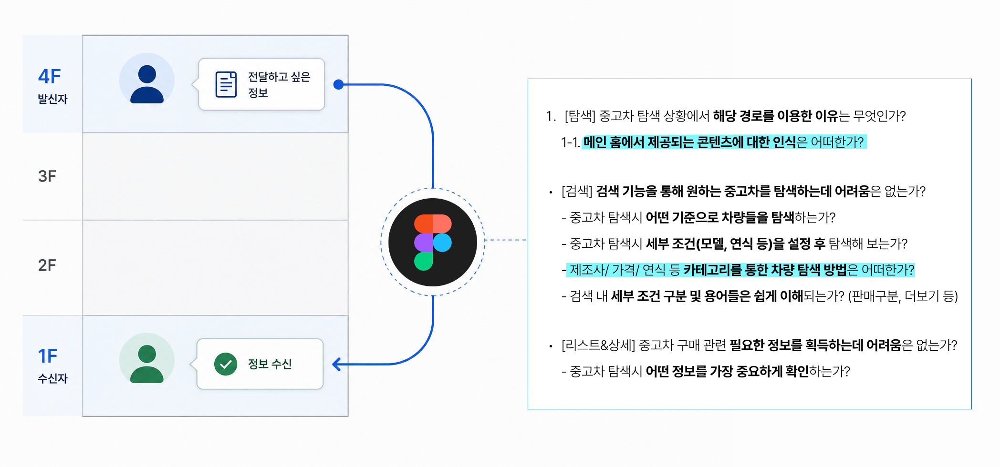
함께 검토된 대안
| 후보 방식 | 장점 | 검토 포인트 |
|---|---|---|
| 무선 이어피스(진행자 착용) | 전달이 빠르고 즉각적인 대응 가능 | 인터뷰 중 안내를 동시에 들어야 해 진행자의 인지 부담이 커질 수 있으며, 안내 내용이 일회성으로 남지 않음 |
| Google Chat·카카오톡 등 메신저 | 메시지 기록 확인 가능 | 진행자가 메시지를 읽기 위해 화면을 확인해야 하므로 인터뷰 중 시선 이탈이 발생할 수 있음 |
IDI 조사실 배치
이슈 · 미확정 현재 IDI 배치도는 시료와 탑뷰 카메라를 사용하는 UT 환경을 기준으로 작성되어 있습니다.
배경
IDI는 UT와 달리 시료 없이 대화 중심으로 진행되는 조사 유형이지만, 현재 문서에는 IDI 전용 배치도가 별도로 마련되어 있지 않습니다. UT 배치도를 그대로 적용하기 어려운 부분이 있어 별도 확인이 필요합니다.
IDI 실사를 통해 하기 항목 확인
- IDI 참여자·진행자 좌석 배치
- 탑뷰 시료 카메라 미사용 시 HDMI 3번 포트 활용 방식
- 조사 목적에 따른 카메라 구성 (e.g. IDI 참여자뷰·전경 CCTV 위치)
참고
모바일 외 시료 탑뷰 세팅
이슈 · 미검증 이번 실사는 모바일 시료에 맞춰 탑뷰 환경을 세팅했습니다.
배경
현재 시료 탑뷰 카메라 설치 기준은 모바일 시료를 기준으로 검증된 내용입니다. 시료의 크기·형태가 달라지면 카메라 높이·화각·촬영 영역 기준도 함께 달라질 수 있어 재검증이 필요합니다.
모바일 외 다른 특성의 시료를 활용해 하기 항목 확인
- 시료 크기·형태에 따른 카메라 높이와 화각, 촬영 영역 범위
- 스탠드 위치 및 마스킹 테이프 기준 재확인
참고
| 참고 자료 |
|---|
| 시료 탑뷰 카메라 세팅 |
UT 외 조사 유형 장비·마이크 구성
이슈 · 미확정 현재 장비 세팅은 이번 UT 및 IDI 운영 기준을 중심으로 정리되어 있습니다.
배경
현재 문서의 장비·마이크 구성은 UT·IDI 기준으로 정리되어 있어, FGI 등 참여 인원과 진행 방식이 다른 조사 유형에 그대로 적용 가능한지는 확인되지 않았습니다.
UT 외 다른 조사 유형의 실사를 통해 하기 항목 확인
- FGI·일반 IDI 등 조사 유형별 필요 마이크 수량과 종류
- 유선·무선 마이크 구성
- 카메라 수와 HDMI 포트 배정, 녹화·송출 방식
참고
| 참고 자료 |
|---|
| 1층 조사실 장비 세팅 |
| 조사 유형 확인 |
참여자 대기 장소·동선
이슈 참여자 대기 장소는 우선 B1층으로 계획하고 있으나, 실제 동선과 대기 환경은 다음 실사에서 확인이 필요합니다.
배경
참여자 대기 장소는 현재 B1층으로 계획하고 있지만, 가이드 문서에 별도로 정리된 내용은 없어 실제 동선(건물 진입부터 대기 장소까지)과 대기 환경(공간·안내 방식)은 아직 실사로 검증이 필요합니다.
다음 실사를 통해 하기 항목 확인
- B1층 대기 장소까지의 실제 동선 및 대기 환경
- 참여자 안내 방식 (동선 안내, 표지판 등)
참고
| 참고 자료 |
|---|
| 회의실 예약 |
STT Raw data 정제 및 Matrix Table 작성
이슈 지금까지는 Raw data를 분석용 Matrix Table로 정리하는 작업을 수작업으로 진행해, 상당한 리소스가 소요되고 있습니다.
배경
지금까지는 스크립트 변환 후 실제 분석에 들어가기 전, Raw data를 Matrix Table(엑셀 정리) 형태로 만드는 과정을 담당자가 직접 수작업으로 진행해왔습니다. 이 과정에서 상당한 시간과 리소스가 소요되어 효율화가 필요하며, 효율화 이후 실제 분석을 진행하는 과정에서 필요한 스킬·진행 방법도 함께 고려되어야 합니다.
Matrix Table 정제 효율화 방안 검토를 통해 하기 항목 확인
- 자동 정제·분류 등 업무 효율화에 활용 가능한 AI 도구·방식
- 적용 시 예상되는 리소스 절감 효과
- 효율화 이후 실제 분석 진행에 필요한 스킬 및 진행 방법
참고
| 참고 자료 |
|---|
| 스크립트 정리 방법 |